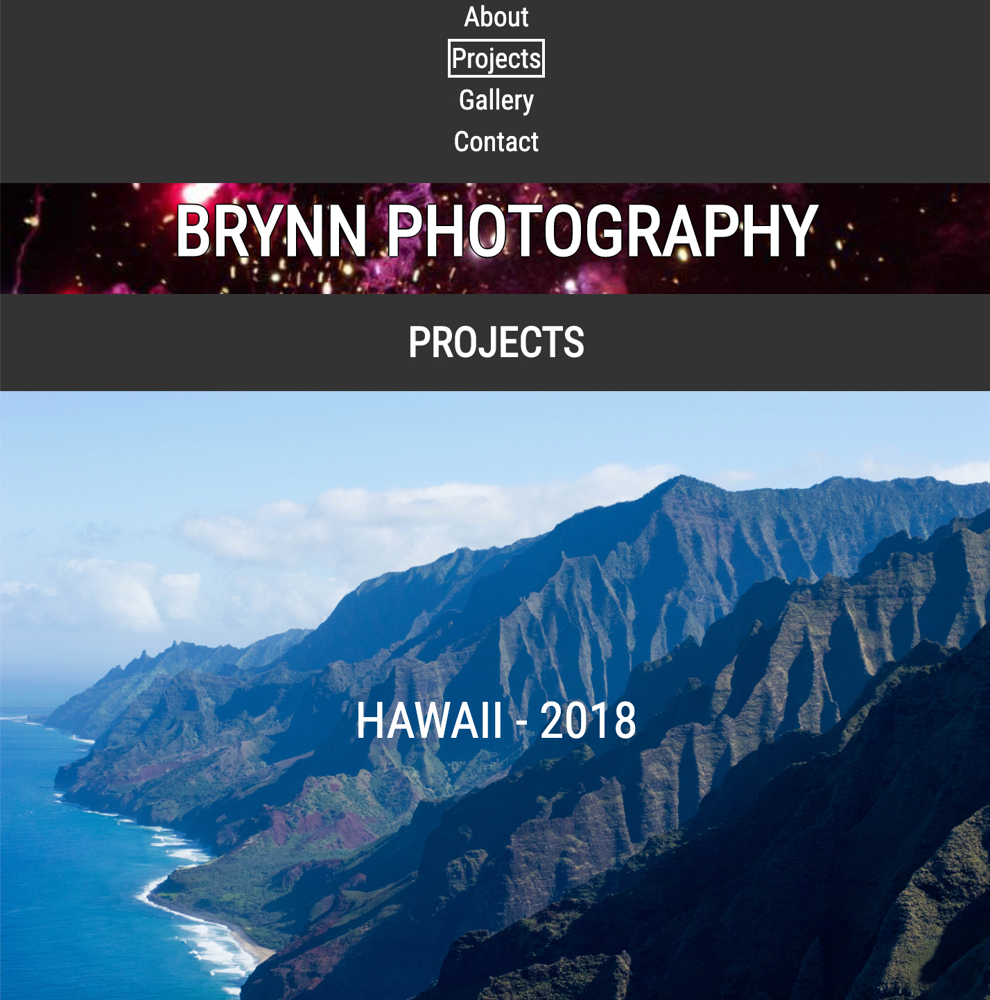
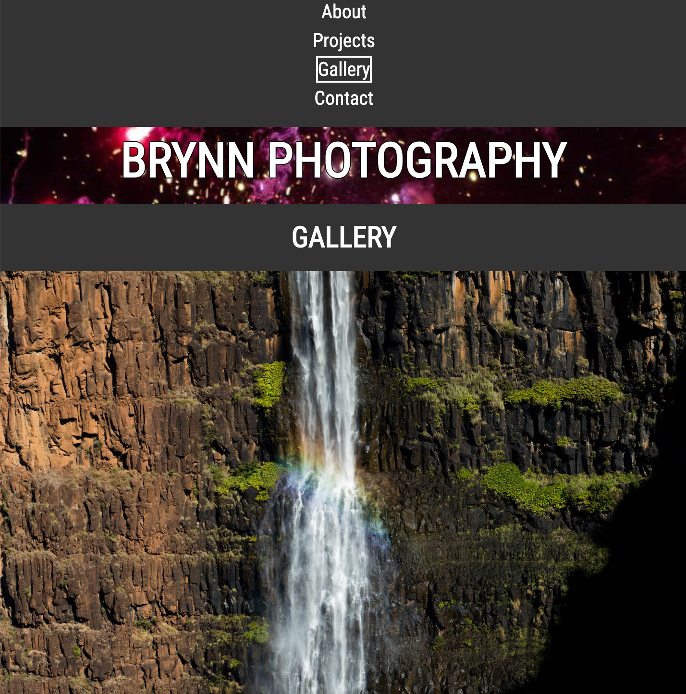
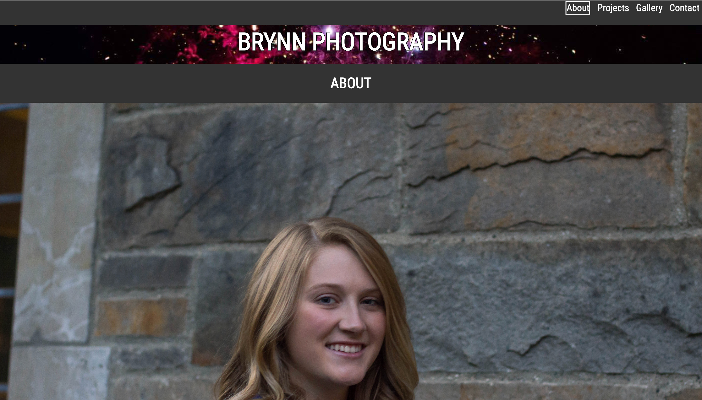
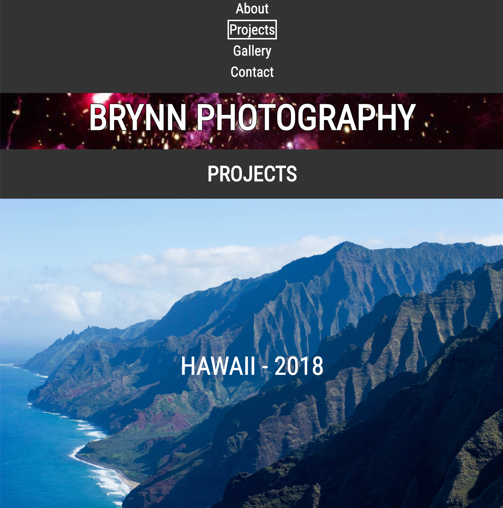
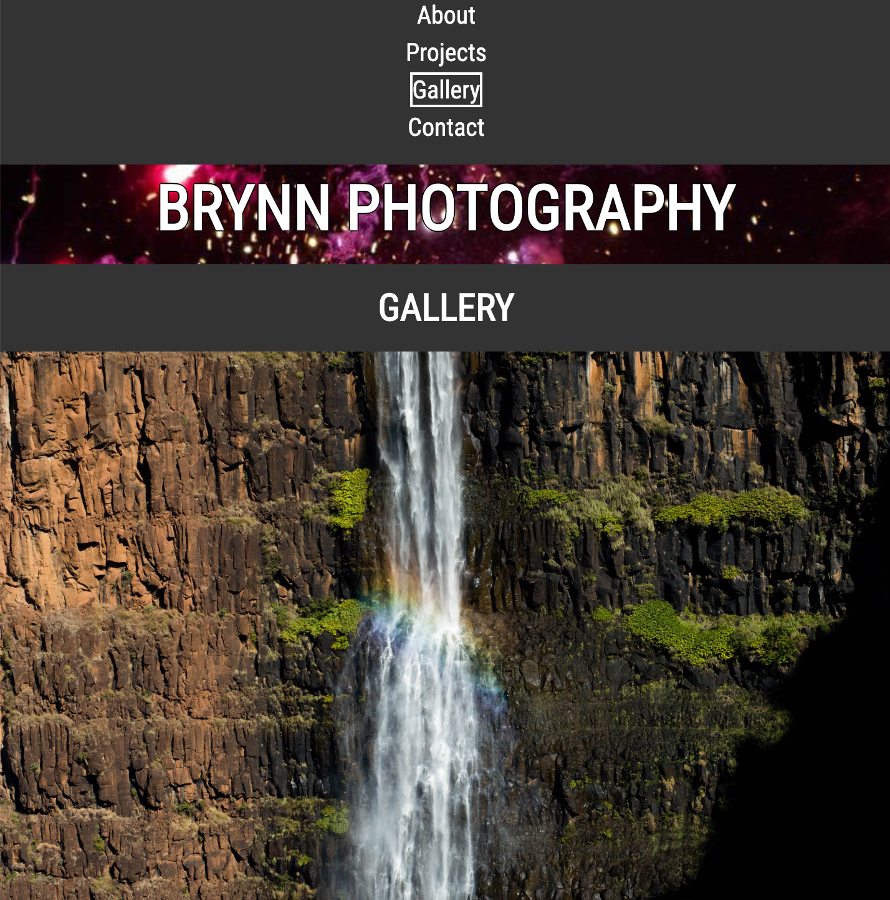
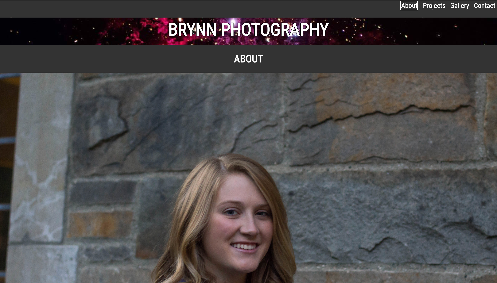

Erin Brynn
Personal Photography Portfolio
As a project in a class in the School of Information, every person programmed a website about whatever they found interesting. I decided to build a personal photography portfolio, which is something I'd always wanted to do. I used HTML and CSS to make an accessible and responsive website, and below you can see screenshots of my pages along with the link to the site on GitHub.
 




